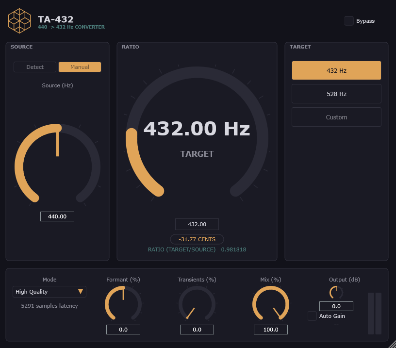

TA-432
Convert your master bus from 440 Hz to 432 Hz - or any custom reference - in real time, transparently. Free, no account, no license.

Built for transparency, not creative pitch-shifting
A tiny, precise ratio shift (432/440 is about a third of a semitone) deserves a tool designed for that, not a general-purpose harmonizer.
432 Hz & 528 Hz presets
One click for the two most requested reference pitches, or dial in any custom target manually.
Manual source correction
Assumes 440 Hz by default, but lets you correct the source pitch if your track isn't quite there.
Formant preservation
Keeps voices and instruments sounding natural instead of chipmunked, even at the smallest ratios.
Transient preservation
A simple onset detector blends back toward the original signal on percussive hits, avoiding the smear phase-vocoders are known for.
Quality / Reactive modes
High Quality for mixing and mastering, Reactive for a much shorter, monitoring-friendly latency.
Auto Gain
Measures dry vs. wet level in real time and compensates automatically, so the conversion never sneaks in a level change.
Dry/Wet mix
Blend or A/B against the original signal without leaving the plugin.
PDC-correct bypass
Bypassing TA-432 never desyncs your session - latency compensation stays correct whether it's on or off.